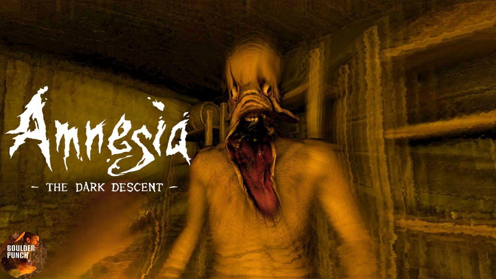

Adéntrate en mundos inquietantes, descubre oscuros secretos y vive experiencias que te mantendrán en el borde del abismo. Con atmósferas aterradoras y criaturas espeluznantes, cada juego está diseñado para sumergirte en el verdadero terror. ¡Atrévete a explorar y siente el escalofrío en cada momento!
Outlast (2013)

Un juego de terror en primera persona en el que te enfrentas a horrores inimaginables mientras exploras un manicomio abandonado con solo una cámara para guiarte.
Amnesia The Dark Descent (2010)
Un juego de terror psicológico en primera persona que crea una atmósfera intensa y aterradora mientras exploras una mansión oscura y llena de secretos.